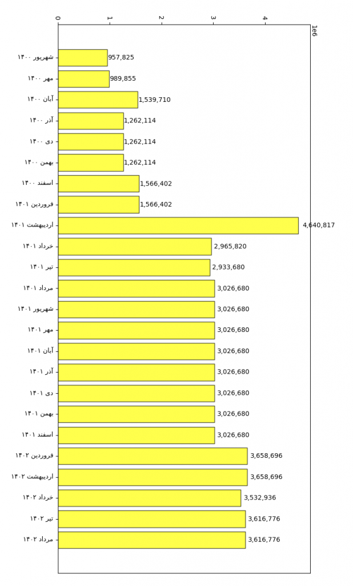
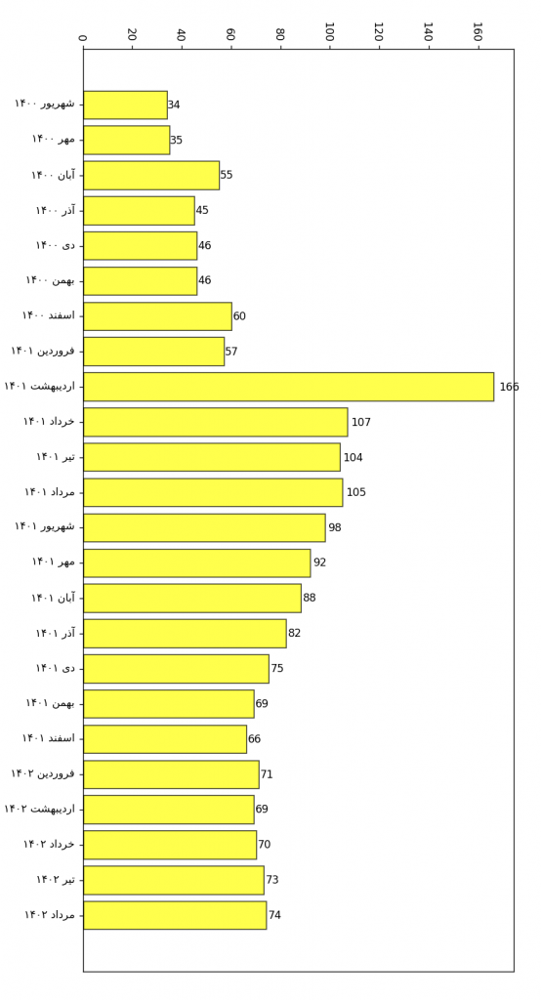
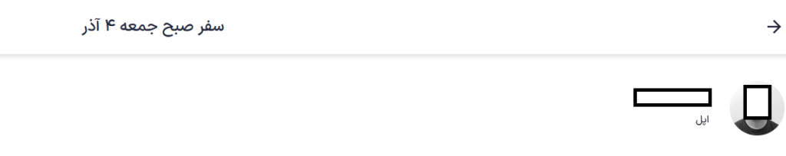
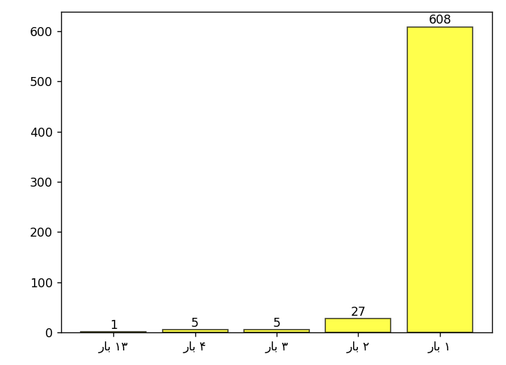
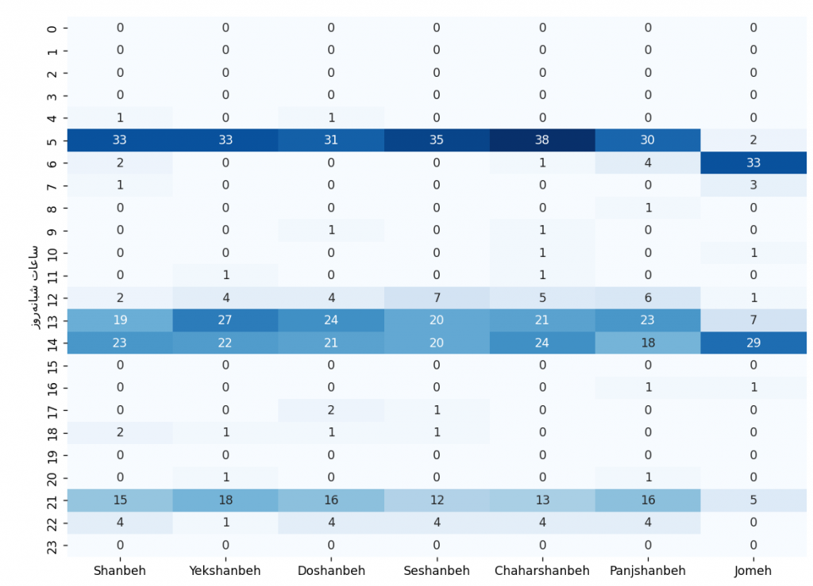
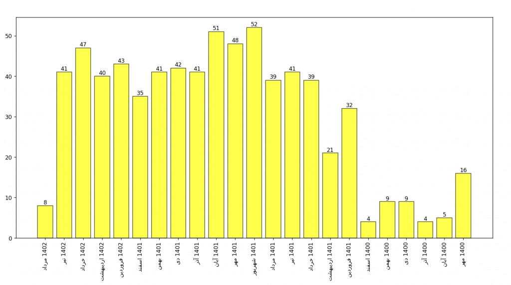
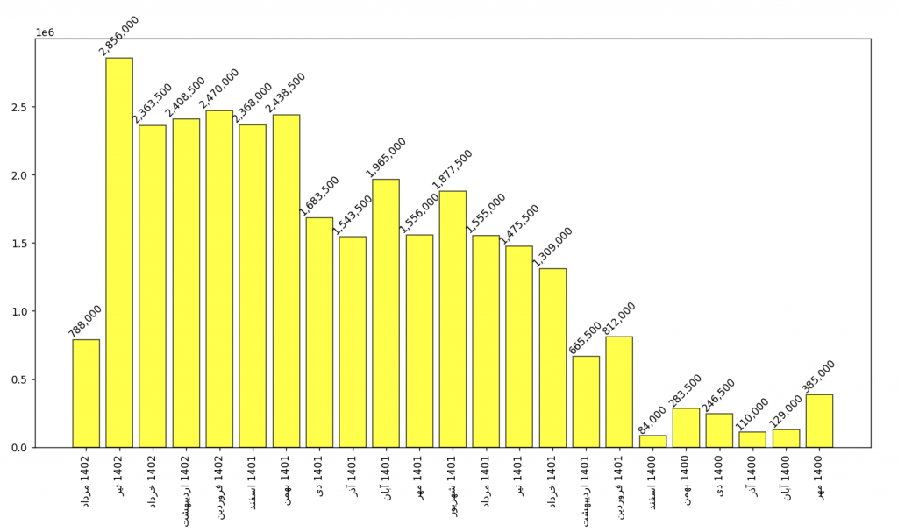

سربازی اجباری من هم بعد از ۲۴ ماه که میشه معادل ۷۳۰ روز یا ۱۷,۵۲۰ ساعت یا ۱,۰۵۱,۲۰۰ دقیقه یا ۶۳,۰۰۷,۰۰۰ ثانیه به اتمام رسید. من سربازی اجباری رو با درجه ستوان سوم وظیفه در راهنمایی و رانندگی تهران گذروندم. در حال حاضر در راهنمایی و رانندگی (چون فقط در مورد جایی که خدمت کردم میتونم صحبت کنم و از سایر ارگان ها اطلاعی ندارم) به سربازی که کارشناسی ارشد داشته باشه درجه ستوان دوم میدن ولی در شرایط مختلف ممکنه این موضوع تغییر کنه. مثلا من معاف از رزم شدم و درجهم به ستوان سوم تنزل پیدا کرد. دوستی در دوران آموزشی داشتیم که با مدرک کارشناسی ارشد درجه استوار یکم گرفت که همه تعجب کرده بودیم!
همین ابتدا بگم که من تمام راه های جایگزین خدمت رو میدونستم. چرا این رو میگم؟ چون بعضی ها فکر میکنند فقط خودشون از این چیز ها اطلاع دارند و با یک نگاه عاقل اندر سفیه میگن نمیتونستی امریه بگیری؟ نمیتونستی پروژه بگیری؟ اتفاقا میدونستم و میتونستم و از هیچ تلاشی هم برای رسیدن بهش فروگذار نکردم. حداقل مدیون وجدان خودم نیستم. هر کاری میتونستم انجام دادم. زمان ما دانشکده علوم مهندسی دانشگاه تهران سرباز امریه میگرفت. فقط هم این دانشکده نبود. تقریبا تمام دانشکده ها سرباز امریه میگرفتن. من اواخر ترم آخر یواش یواش تحقیقاتم رو در مورد مراحل اداری گرفتن امریه شروع کردم. استاد راهنمای من رئیس دانشکده هم بود و زمانی که گفتم میخوام تو دانشکده امریه بگیرم استقبال کرد و بهم توصیه نامه هم داد تا به نیروی انسانی دانشگاه ببرم. کارمند نیروی انسانی دانشگاه هم که بسیار انسان یبسی بود، با اکراه که انگار قراره ارث پدریشون رو به زور از چنگشون در بیارم نامه درخواست امریه رو گرفت. همه شرایط گرفتن امریه رو هم داشتم. به من گفتن که تاریخ اعزام رو بزن ۱ شهریور و برگه سبز رو برای ما بیار.
من ۵-۶ ماه قبل از تاریخ اعزامم اقدام کرده بودم و درخواست فارغ التحصیلی رو ثبت کردم تا اون نامه لعنتی دانشگاه رو بگیرم و برم پلیس به علاوه ۱۰ و به اصطلاح دفترچه سربازی رو پست کنم. اینجا بود که افتادم توی لجن بروکراسی اداری. به دلیل اینکه دوران کرونا بود مراحل خیلی کند پیش میرفت. قشنگ مثل رد کردن هفت خان رستم بود. خلاصه رسیدم به تایید آخر که اون نامه ابطال معافیت تحصیلی رو بگیرم. توی این مرحله گیر کرده بودم. هر چقدر ایمیل میزدم و تماس میگرفتم میگفتن داریم بررسی میکنیم ولی هیچ پیشرفتی حاصل نمیشد. چندین بار حضوری رفتم دانشگاه و بعد از کلی دعوای حضوری و ایمیلی بالاخره در تاریخ ۲۶ اردیبهشت ۱۴۰۰ ساعت ۱۱ صبح نامه ابطال معافیت تحصیلی رو گرفتم. حالا مشکل چی بود؟ اینا فکر میکردن که بعد از تایید، نامه به صورت خودکار ایمیل میشه ولی برای من این اتفاق نیافتاده بود و آخرش دستی برام ایمیل کردند. این قضیه ۱ ماه من رو عقب انداخت. منم بلافاصله رفتم و دفترچه رو پست کردم.
بعد از ثبت درخواست باید برید پیش پزشک معتمد تا معاینه کنه. عموما همه تلاش میکنن تا هر مشکل ریز و درشتی که دارن رو بریزن روی دایره که معافیت بگیرن. پزشک ها هم تمام تلاششون رو میکنن بگن شما هیچ مشکلی نداری و سالمی. حالا از شانس من این پزشک پفیوز داشت تمام تلاشش رو میکرد که یه عیبی روی من بذاره. هی بهش میگفتم من اصلا هیچ مشکلی ندارم و نمیخوام معافیت بگیرم. فقط میخوام هر چه سریع تر برگه سبزم رو بگیرم. آخرش با این حرف که برای من مسئولیت داره، یه مشکل کسشر برام نوشت و باعث شد وارد باتلاق دوم بشم. آخه تا حالا کی رو به خاطر اگزما خیلی خفیف دستش معاف کردن؟ پیش پزشک معتمد (متخصص پوست و مو) دوم که رفتم هم بازم این موضوع رو گفتم که من اصلا برای معافیت نیومدم. بزن سالم و دست از سر من بردارید! دوباره این پفیوز هم گفت نه میزنم معاف از رزم بشی که اسلحه دستت ندن. گیر عجب خر هایی افتادیم ها! این کارش باعث شد که من تا ۱۶ تیر ۱۴۰۰ (تاریخ شورای پزشکی برای تصمیم گیری وضعیت معافیتم) علاف بشم. توی شورا هم به طرف گفتم آقا من اصلا معافیت نمیخوام. فقط برگه سبزم رو هر چه سریع تر میخوام. اونم گفت عه؟ باشه و درخواست معافیتم رو رد کرد. شاید بگید که آدم خوبی بوده؟ نه! اینم پفیوز بود. اینجا شما با یه پای قطع شده هم میرفتی میگفت باید اثبات کنی که پات قطع شده!
خلاصه من ۱۹ تیر ۱۴۰۰ (۴۳ روز قبل از اعزام) برگه سبز رو گرفتم و بردم نیروی انسانی دانشگاه. اونجا دبه کرد که تو باید ۵۵ روز قبل از تاریخ اعزام باید برگه سبز رو میاوردی. منم هر چی گفتم که دست من نبوده و افتاده توی پروسه نظام وظیفه، قبول نکرد. من میدونستم که این قضیه همش فرمالیته است. چون یکی از سرباز های دانشگاه رو از توی پادگان (ارتش) که عملا دیگه کار تموم شده بود آوردن و امریهش رو اوکی کردند. بعد گفت که باید تاریخ اعزامت رو بندازی آبان ۱۴۰۰ که بتونیم قبول کنیم. منم هر روز میرفتم میدون سپاه (سازمان نظام وظیفه) و هر چقدر بار هر کسی صحبت میکردم تاریخ اعزامم رو تغییر نمیدادن. نامه از دانشگاه گرفتم رفتم پلیس به علاوه ۱۰ و درخواست تغییر تاریخ اعزام رو دادم. اما هیچی به هیچی! انقدر کارمند نیروی انسانی دانشگاه اذیت کرد که رسید به ۱۰ روز مونده به اعزام و برگه سفیدم اومد. توی برگه سفید مینویسه کدوم ارگان افتادی. من افتاده بودم نیروی انتظامی. بعد که کار از کار گذشت، نیروی انسانی گفت بیا ببینیم چیکار میتونیم بکنیم (خودشون میدونستن که کاری نمیشه کرد) و چند روز قبل از اعزام بهم زنگ زدن که کاری نمیشه کرد. اگر ارتش میافتادی میتونستیم درستش کنیم ولی نیروی انتظامی رو کاری نمیشه کرد. خلاصه من با وجود اینکه همه تلاشم رو کرده بودم نشد که بشه و ۱ شهریور ۱۴۰۰ رفتم آموزشی.
از اینجا به بعد میخوام یه مقدار با آمار و ارقام بازی کنم.
من در طول این ۲۴ ماه ۶۳,۲۴۴,۱۷۳ تومان حقوق گرفتم که یعنی به طور میانگین میشه ماهی ۲,۶۳۵,۱۷۳ تومان. از این مقدار، ۸,۸۴۰,۱۳۴ تومان برای ۷ ماه در سال ۱۴۰۰ و ۳۶,۳۲۰,۱۵۹ تومان برای ۱۲ ماه در سال ۱۴۰۱ و ۱۸,۰۸۳,۸۸۰ تومان برای ۵ ماه در سال ۱۴۰۲ است. نکته جالب چیه؟ ۷۳۰ روز خدمت میشه حدودا ۶۳ میلیون ثانیه. بنابراین تقریبا به ازای هر ۱ ثانیه از خدمت ۱ تومان (۱۰ ریال) حقوق گرفتم! نمودار زیر نشون میده در این ۲۴ ماه چقدر حقوق گرفتم. همه مبالغ هم به تومان هستند:

دلیل اینکه حقوق اردیبهشت ۱۴۰۱ انقدر با بقیه اختلاف داره اینه که قرار بود از فروردین ۱۴۰۱ افزایش حقوق داشته باشیم ولی فروردین این اتفاق نیافتاد و مابقیش رو اردیبهشت پرداخت کردن. حقوق مرداد ۱۴۰۲ رو هم هنوز واریز نکردند. چون من الان اومدم مرخصی پایان دوره. اما بالاخره واریز میکنن و مبلغش رو همون مبلغ شهریور ۱۴۰۲ گذاشتم.
در مورد حقوق سربازی همیشه حرف و حدیث زیاده. یه دسته از افراد هستند که در گذشته سرباز بودند و قطعا نسبت به حال حاضر حقوق کمتری میگرفتند و زیر تمام پست ها و توییت های مربوط به حقوق میگن شما دارید خیلی خوب حقوق میگیرید. ما اون موقع هزار تومن حقوق میگرفتیم. نمیدونم دقیقا اون لحظه خاص چی توی ذهنشون میگذره که چنین حرفی میزنن. تو ایران زندگی نمی کنید؟ یه زمانی با 20 میلیون میشد پراید خرید. 100 سال پیش؟ نه، همین سال 1395. سختی خدمت در سربازی مثل محور اعداد حقیقی میمونه. شما بگی من x واحد سختی کشیدم، قطعا یه نفر پیدا میشه بگه x+epsilon سختی کشیده. یعنی شما بگو من سیستان و بلوچستان در نقطه صفر مرزی خدمت کردم. یه نفر پیدا میشه میگه تو که خدمتت خوب بوده، من نقطه منفی ۱ مرزی (خود افغانستان) خدمت کردم. شما بگو من افغانستان خدمت کردم. یه نفر پیدا میشه بگه شما الان اصلا خدمت نمیکنید. من تو جنگ ۸ ساله خدمت کردم! همینجوری ادامه داره. شاید محور اعداد حقیقی عدد کم بیاره ولی این دنباله من از تو بدبختترم تموم نمیشه! مثالی که من همیشه میزنم اینه که خدمت سربازی مثل چوبی میمونه که تو کون شما میکنن. منطقش هم مثل همین محور اعداد حقیقیه. همیشه یه نفر پیدا میشه که بگه من ۱ میلیمتر بیشتر از تو چوب توی کونم رفته. در حین اینکه دارن در مورد این موضوع که چند سانت چوب تو کونشون رفته صحبت میکنن، این موضوع رو که چوب توی کونشون گیر کرده رو فراموش کردند!
یه موضوع دیگه که خیلی برام عجیبه اینه که بعضی از مردم اعتقاد دارند توی خدمت باید خودت هم به خودت سخت بگیری و فشار مضاعفی رو به خودت وارد کنی. چرا؟ چرا مسیری که میتونم با ماشین برم رو باید پیاده برم؟ چرا وقتی دارم از تشنگی هلاک میشم نباید یه آبمیوه بخرم و بخورم؟ اگر با خرج کردن پول بتونم صدمات روانی و فیزیکی که خدمت بهم وارد میکنه رو کم کنم چرا نباید خرج کنم؟
نمودار زیر رو نگاه کنید. این نمودار نشون میده هر ماه چند دلار حقوق میگرفتم :

حقوق سربازی بیشتر شده؟ خب قیمت دلار هم بیشتر شده. بنزین هم گرون تر شده. کرایه تاکسی هم بیشتر شده. زندگی ها هم سخت تر شده.
حالا بریم سراغ هزینه رفت و آمد. من در طول این ۲۴ ماه ۳۱,۳۸۹,۵۰۰ تومان برای رفت و آمدم با اسنپ و ۳,۲۴۹,۰۰۰ تومان هم با تپسی خرج کردم. یعنی در مجموع ۳۴,۶۳۸,۵۰۰ تومان فقط خرج رفت و آمد کردم. بنابراین از ۶۳,۲۴۴,۱۷۳ حقوقی که در طول این ۲۴ ماه گرفتم فقط ۲۸,۸۵۴,۶۷۳ تومان میمونه که به طور میانگین میشه ماهی ۱,۲۰۲,۲۷۸ تومان.
از اونجایی که بیشتر سفر ها رو با اسنپ رفتم، نمودار هایی که در ادامه میارم رو فقط برای اسنپ ترسیم میکنم. در طول این ۷۳۰ روز من در مجموع ۷۱۰ بار اسنپ گرفتم. در جدول زیر میتونید مدل ماشین هایی که گرفتم رو مشاهده کنید :
| مدل ماشین | تعداد | |
|---|---|---|
| 0 | پراید | ۲۴۳ |
| 1 | پژو ۴۰۵ | ۹۹ |
| 2 | سمند | ۶۰ |
| 3 | تیبا | ۵۱ |
| 4 | پژو پارس | ۳۶ |
| 5 | پژو ۲۰۶ | ۳۱ |
| 6 | کوییک | ۲۹ |
| 7 | موتور | ۲۲ |
| 8 | تیبا ۲ | ۲۰ |
| 9 | پراید هاچ بک | ۲۰ |
| 10 | ساینا | ۱۹ |
| 11 | تندر ۹۰ | ۱۶ |
| 12 | پژو ۲۰۶ صندوق دار | ۱۴ |
| 13 | پژو روآ | ۱۲ |
| 14 | رانا | ۹ |
| 15 | دنا | ۶ |
| 16 | سمند سورن | ۴ |
| 17 | پژو آر دی | ۲ |
| 18 | ریو سایپا | ۲ |
| 19 | فولکس گل | ۱ |
| 20 | برلیانس اچ 330 | ۱ |
| 21 | پژو 207 | ۱ |
| 22 | ام وی ام 315 | ۱ |
| 23 | جک جی 4 | ۱ |
| 24 | مزدا 323 | ۱ |
| 25 | هیوندای ورنا | ۱ |
| 26 | ام وی ام 110 | ۱ |
| 27 | ساندرو | ۱ |
| 28 | چانگان سی اس 35 | ۱ |
| 29 | اپل | ۱ |
| 30 | برلیانس اچ 230 | ۱ |
| 31 | تویوتا کرونا | ۱ |
| 32 | آریو z300 | ۱ |
| 33 | برلیانس C3 | ۱ |
| 34 | مجموع | ۷۱۰ |

توی این ۷۱۰ سفری که با اسنپ داشتم، ۶۴۶ راننده مختلف رو دیدم. پس نشون میده بعضی از راننده ها رو چند بار دیدم. یکی از راننده ها رو ۱۳ بار دیدم. نکتهش هم این بود که این راننده توی محل ما زندگی میکرد و حوالی ساعت ۵ صبح میشه گفت تقریبا تنها راننده اون محل بود و شب تا صبح هم کار میکرد. نمودار زیر تعداد دفعاتی که راننده های تکراری رو دیدم نشون میده. مثلا بر اساس نمودار زیر، ۲۷ تا راننده وجود داشته که هر کدوم رو ۲ بار دیدم.

هیتمپ زیر نشون میده من بیشتر در روز های مختلف هفته، در چه ساعاتی از شبانهروز بیشتر اسنپ میگرفتم :

من شیفتم در طول این ۲ سال خیلی تغییر کرده. شیفتم بین صبح و عصر به صورت نامنظم عوض میشده. برای همینه که هیتمپ بالا ۵ صبح، ۱۴ ظهر و ۲۲ شب مقدار داره. اون ساعت ۱۳ ظهر و ساعت ۲۱ شب هم اینجوری بوده که مثلا ۱۳ و ۵۷ دقیقه یا ۲۱ و ۵۰ دقیقه اسنپ رو زدم که تا قبول کنه و برسه من هم آماده بشم. در واقع شیفت صبح ساعت ۱۴ و شیفت عصر ساعت ۲۲ تموم میشده.
نمودار بالا نشون میده بیشتر حوالی ساعت ۵ صبح اسنپ میگرفتم. دلیلش هم اینه برای اینکه ۵ و ۳۰ دقیقه صبح حضور میزدم هیچ راه دیگهای جز اسنپ گرفتن نداشتم. از مترو و اتوبوس هم نمیتونستم استفاده کنم. چون ساعت ۵ صبح مترو باز نیست. حتی اگر مترو باز بود و میخواستم با مترو برم دیگه ۵ صبح نباید راه میافتادم. باید ۴ و ۳۰ دقیقه صبح راه میافتادم. وسیله شخصی هم نداشتم. حوالی ساعت ۱۴ هم عموما به دلیل اینکه هیچ جونی توی بدنم نمونده بود اسنپ میگرفتم. راه جایگزین این بود که بخشی رو پیاده برم، مترو سوار بشم، ۲ تا خط عوض کنم و دوباره کلی پیادهروی کنم تا برسم خونه ولی ترجیح میدادم به خودم بیش از این فشار نیارم.
نمودار زیر نشون میده در ماه های مختلف سال های ۱۴۰۰ و ۱۴۰۱ و ۱۴۰۲ چند بار اسنپ گرفتم :

در نمودار بالا برای ۲۳ ماه مقدار وجود داره. دلیلش هم اینه که ۱ ماه از این ۲۴ ماه (شهریور ۱۴۰۰) رو آموزشی بودم. دلیل اینکه شهریور و مهر و آبان ۱۴۰۱ بیشتر از سایر ماه ها اسنپ گرفتم این بوده که نَکِش شده بودم! دیدم این همه خدمت کردهم و تازه ۱ سال گذشته و ۱ سال دیگه هم مونده! این آمار و ارقام برای خودم خیلی جالبه. چون خودم میدونم چرا فلان ماه زیاد اسنپ گرفتم و فلان ماه کم گرفتم.
نمودار زیر نشون میده در ماه های مختلف سال های ۱۴۰۰ و ۱۴۰۱ و ۱۴۰۲ چقدر برای اسنپ گرفتن هزینه کردم. محور عمودی مجموع هزینه سفر ها در اون ماه رو به تومان نشون میده :

مقایسه دو نمودار بالا نکات جالبی رو نشون میده. مثلا تیر ۱۴۰۱ من ۴۱ سفر انجام دادم که هزینهش شده ۱ میلیون ۴۷۵ هزار تومان و در تیر ۱۴۰۲ هم دقیقا ۴۱ سفر انجام دادم ولی هزینهش شده ۲ میلیون ۸۵۶ هزار تومان!
nb.neighbours()
| title | date | |
|---|---|---|
| prev | خانهکاوی در دیوار! | ۱۴۰۱/۱۲ |
| next | یک کیلو بادوم سنگینتره یا چیپس؟! | ۱۴۰۲/۰۵ |